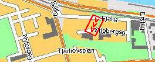
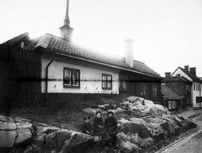
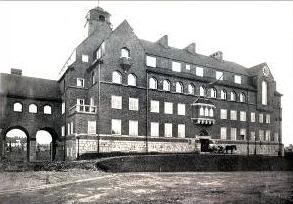
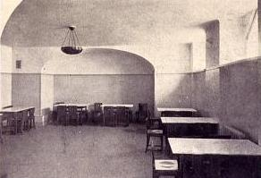
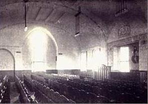
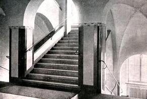
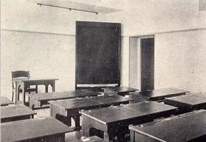

|
 |
Frans Schartaus Handelsinstitut |
|
 Stigbergsgatan 22-26 (Kv Grenen) Närmast nr 26. Bilden tagen från NO. |
 Institutionsbyggnad vid Frans Schartaus Handelsinstitut, Stigbergsgatan 26. Bilden från 1922 |
 Frukostrum i Frans Schartaus Handelsinstitut. 1922 |
 Samlingssal i Frans Schartaus Handelsinstitut. 1922 |
 Trappuppgång i Frans Schartaus Handelsinstitut. 1922 |
 Lärosal i Frans Schartaus Handelsinstitut. 1922 |